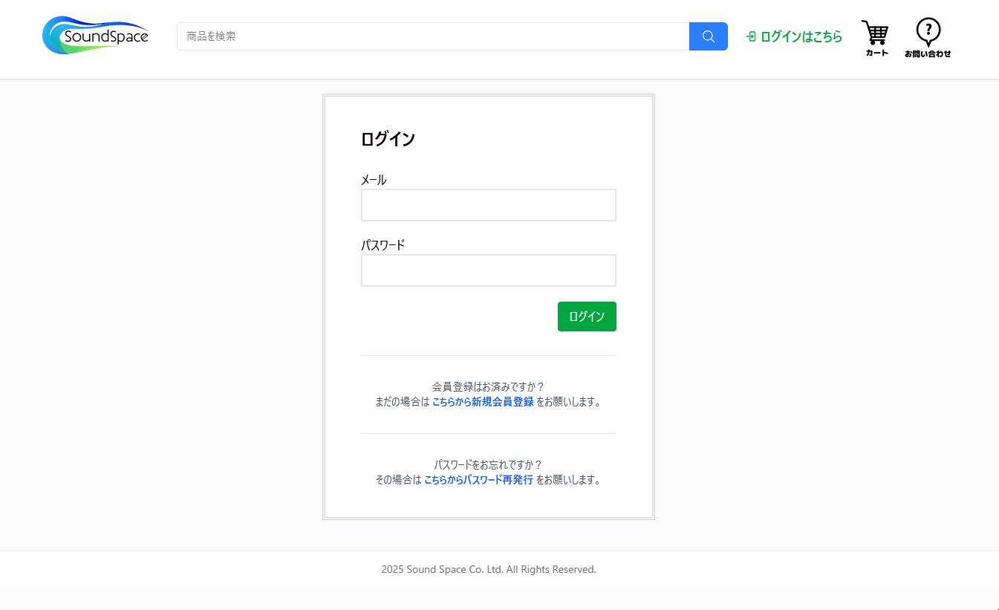
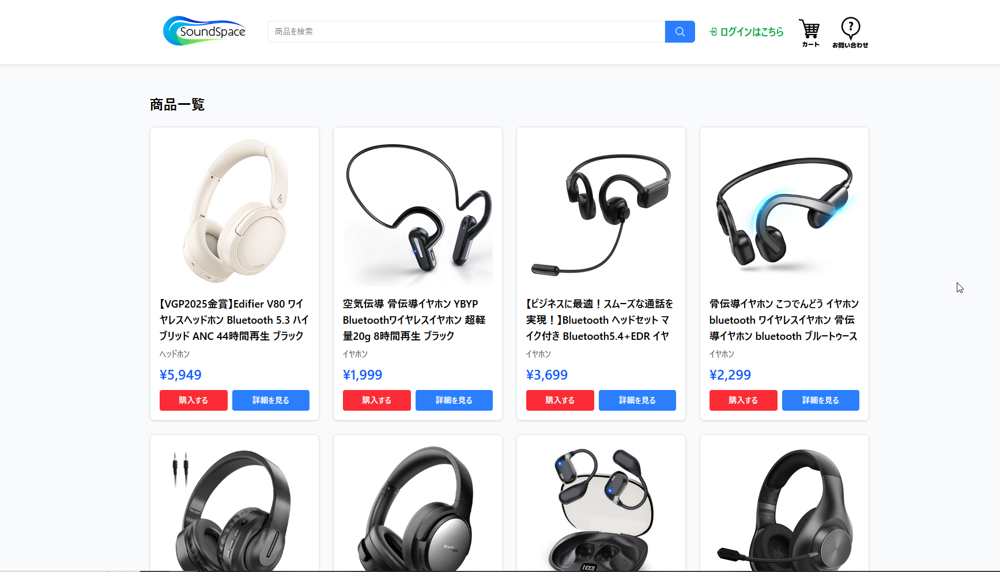
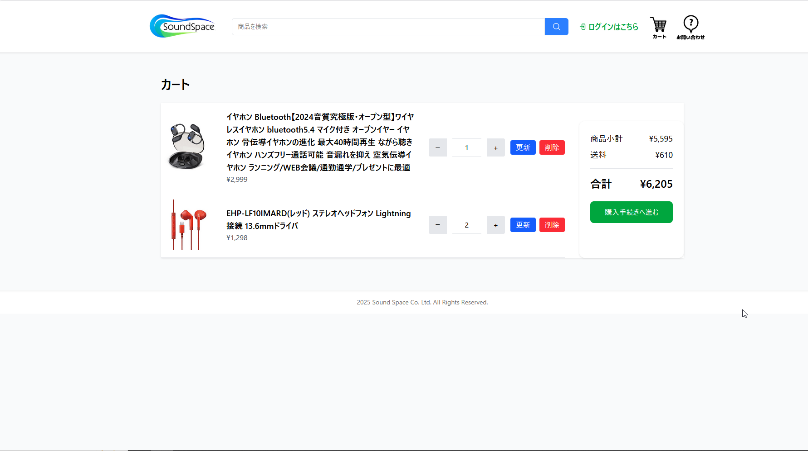
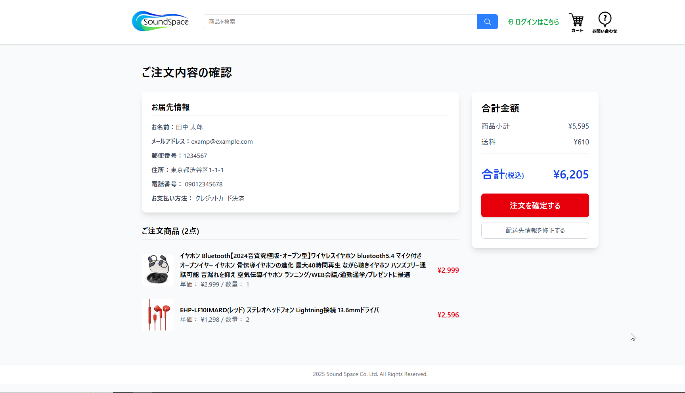
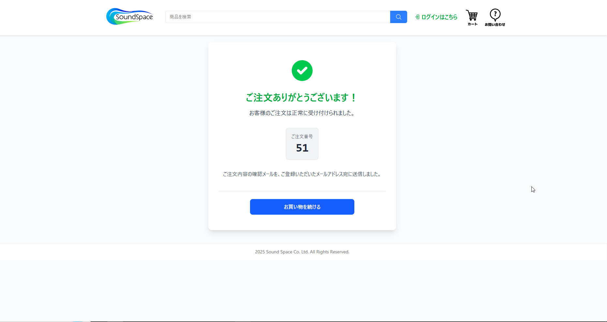
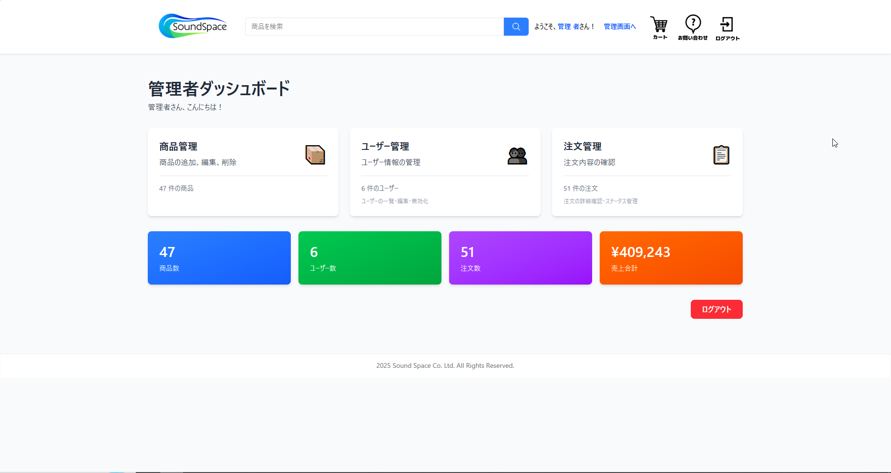
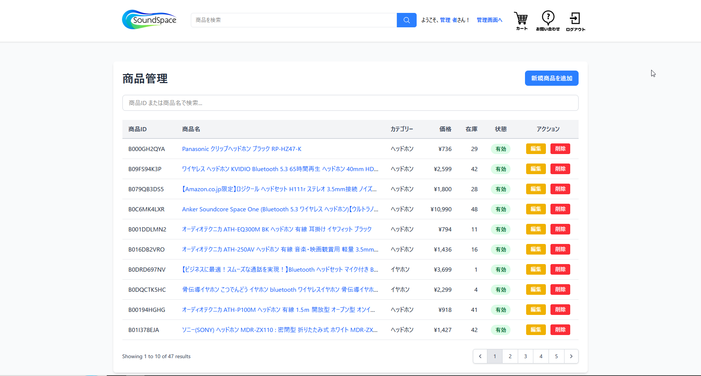
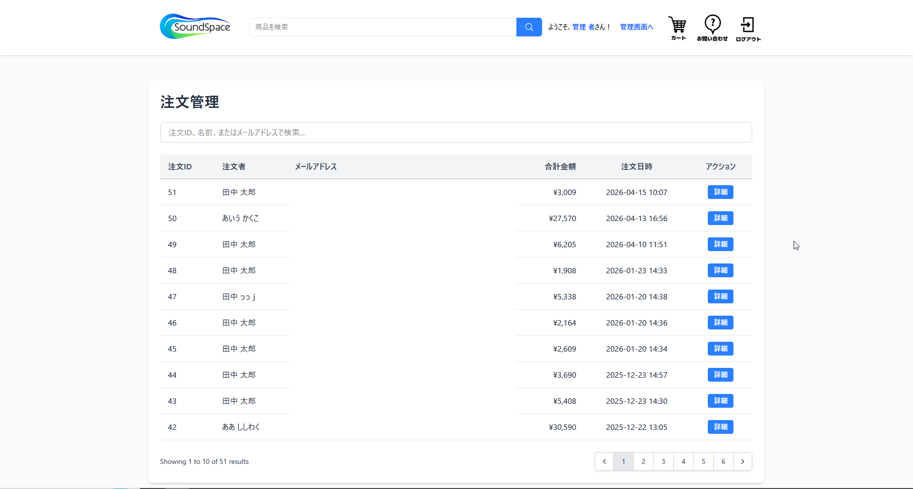
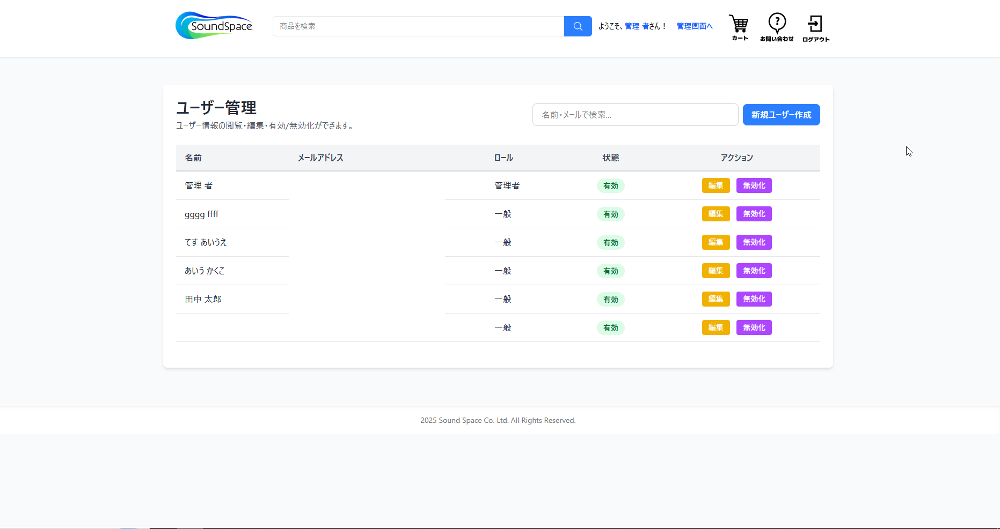
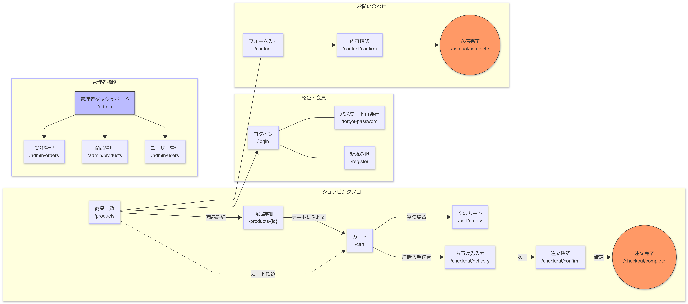

PORTFOLIO
Kaito Yasuda
保田 海斗
未経験からサーバーサイドエンジニアを目指して学習中です。
コードを書くだけでなく、DB設計・テスト・Issue管理まで含めた開発フローを意識して制作に取り組んできました。
About Me
自己紹介
趣味のゲーム翻訳でPythonに触れたことがきっかけで、プログラミングの楽しさと自分の適性を感じ、エンジニアを目指すことを決めました。
就労移行支援事業所のカリキュラムでWebの基礎を学んだ後、2025年5月よりPHPの本格的な学習を開始しました。
コードを書くだけでなく、設計・テスト・開発フローまで意識することで、 チームで開発する現場にも早く貢献できるよう準備しています。
学習開始
2025年5月〜（PHP / Laravel）
所持資格
基本情報技術者 / 応用情報技術者 / TOEIC 925点
現在の技術スタック
PHP / Laravel / Livewire
意識していること
設計・テスト・Issue管理を含めた開発フロー
今後学びたいこと
チーム開発 / クラウド（AWS等）
目指すエンジニア像
顧客の課題を丁寧にヒアリングし、品質で応えられるSE
Works
制作物
🎧️ Sound Space
イヤホン・ヘッドホンの販売を専門とするECサイトです。
会員登録から商品購入までの一連のフローを実装しています。
また、DB設計・テスト仕様書の作成やCIの導入など、実務に近い開発フローを意識して制作しました。
→ 素書き版リポジトリ
主な機能
① 会員登録・ログイン・パスワード再発行
- —メールアドレス・パスワードでの会員登録
- —メールアドレス認証による本人確認
- —ログイン・ログアウト
- —パスワード再発行メール送信

② 商品一覧・詳細・カート・注文フロー
- —商品一覧・詳細ページの表示
- —カートへの追加・削除
- —配達先入力・注文内容確認・注文確定
- —ログイン時は配達先フォームに会員情報を自動入力
- —非ログイン時もゲストとして商品の閲覧・購入が可能
- —注文確定時の二重送信防止




③ 管理者機能
- —商品一覧・管理
- —注文一覧・管理
- —ユーザー一覧・管理




作成背景・目的
就労移行支援事業所の支援員の方に勧められたことをきっかけに、ECサイトを題材として選びました。普段から身近に使っているサービスであるため実装すべき機能のイメージがしやすく、PHPで学んだことの総復習・アウトプットとして最適だと判断しました。
商品ジャンルをイヤホン・ヘッドホンに絞ったのは、総合ショッピングサイトより開発スコープを明確にするためです。商品の属性の幅を制限することによってDB設計の複雑化を避け、その分ロジックの実装に集中することができました。
技術選定の理由
- Laravel：素のPHPではCSRF対策など面倒な実装が多く、UIにも限界を感じたためフレームワークを採用。国内外で最も普及しており、就職後の実務も見越して選定。
- SQLite：開発環境にLaravel Herdを使用しており、AdminerEvoとSQLiteがHerd上で最も手軽に使えたため。
- GitHub Actions（CI）：Laravelスターターキットに含まれていた設定をベースに、pushのたびにPHPUnitが自動実行される仕組みを確認・活用。
設計ドキュメント
画面遷移図

工夫した点・苦労した点
- 注文フローにおけるデータ整合性の確保
- カートへの追加→注文内容確認→注文確定という一連のフローはECサイトの核とも言える部分であるため、細心の注意を払い設計しました。最初はセッションやデータベース間でのデータの受け渡し方法がつかめず、処理の流れを図に書き起こしながら整理することで理解を深めました。
- LivewireによるインタラクティブなUIの実装
- 書籍でLivewireの挙動に感銘を受けたことがきっかけで採用しました。「JavaScriptを使わなくてもリアクティブなUIが実現できる」と感動し取り入れたものの、最初はイベントフックなど新しい概念に慣れず苦労しました。その都度他の方の実装例を調査しながら乗り越えました。
- 商用サービスを想定した網羅的なテスト
- 単に機能を実装して終わりにするのではなく、5つの主要機能（商品・カート・注文・認証・お問い合わせ）にわたるテスト仕様書を作成し網羅的なテストを実施しました。正常系だけでなく「在庫数を超えるカート投入」「URLへの無効な値の入力」「検索窓へのスクリプト入力」など異常系・セキュリティを意識したテストケースも設計・実行しました。
- Issueベース開発によるタスク管理
- 実装したい機能や改善点が頭の中で散漫になりがちなため、GitHubのIssue機能をTodoリストとして活用する開発フローを取り入れました。個人開発ではありますが、就職後のチーム開発を見越してIssue・Pull Requestを使った開発を意識的に経験するようにしました。
Skills
使用した技術
| カテゴリ | 技術・バージョン |
|---|---|
| フロントエンド | Blade, Livewire 3.6.4, Tailwind CSS 4.0.7, Vite |
| バックエンド | PHP 8.2.12, Laravel 12.39.0, Composer 2.8.10 |
| データベース | SQLite 3.49.2 → MySQL 9.2.0 |
| DB管理ツール | AdminerEvo 4.8.4 → phpMyAdmin 5.2.3 |
| 開発環境 | Laravel Herd 1.21.1 (Windows), Node.js 24.5.0, npm 11.5.1, Visual Studio Code |
| バージョン管理 | Git 2.37.3 / GitHub / Sourcetree 3.4.23 |
| CI/CD | GitHub Actions（PHPUnit 自動テスト） |
| テスト | PHPUnit 11.5.33 |
Roadmap
学習・開発のロードマップ
Phase 1 — 2025年5月〜
Web基礎・PHP入門
就労移行支援事業所のカリキュラム・オンライン講義でPHPに入門。Codecademyで文法を補強。
Phase 2 — 2025年6月〜2025年9月
素のPHPでECサイト実装
フレームワークなしでECサイトを実装。DB設計・セッション管理・認証などを自力で実装することでPHPの基礎を体得。
Phase 3 — 2025年10月〜2025年12月
Laravel でリファクタリング（基本機能完成）
書籍（PHPフレームワーク Laravel入門 第3版）でLaravelを学習しながら開発。商品一覧・カート・注文フロー・認証・二重送信防止・会員情報自動入力など基本機能を実装し、ひとまず完成。
Phase 4 — 2025年12月〜現在
機能拡張・品質改善
基本完成後も継続して機能を追加。Livewire・GitHub Actions・PHPUnit を導入し、開発フローも整備。
- —2026年1月：メールアドレス認証機能を実装
- —2026年3月：パスワード再発行機能を実装
- —2026年3月：管理者機能（商品・ユーザー・注文管理）を実装
Phase 5 — 今後
テスト仕様書完成・マイページ実装
Laravel版ECサイトのテスト仕様書を完成。会員が注文履歴の確認やプロフィールの編集ができるマイページ機能を実装。